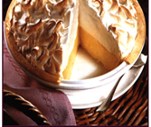

WORLD'S HEALTHIEST FOODS
Mamas Homemade Lemon Meringue Pie

One 9-inch pie
Prep and Cook Time:
- 30 Min-Prep time
- 10 Min-Cook time
- 40 Min-Total
- 8 Servings
Ingredients:
- 1 cup white sugar
- 2 tablespoon all-purpose flour
- 3 tablespoon cornstarch
- 1/4 teaspoon salt
- 1 1/2 cups water
- 2 lemons, juiced and zested
- 2 tablespoon butter
- 4 egg yols, beaten
- 1 (9 inch) pie crust, baked
- 6 tablespoon white sugar
Direction
- Preheat Oven: Preheat oven 350 degrees F(175 degree C)
- Make Lemon Filing: In a medium saucepan...
- Whisk together 1 cup sugar,flour, cornstarch, and salt.
- Stir in water, lemon juice and lemon zest
- Cook over medium-high heat, stirring frequently, until mixture comes to a boid
- Stir in butter.
- Place egg yolks in a small bowl and gradually whisk in 1//2 of hot sugar mixture.
- Bring to a boil and continue to cook while stirring constantly until thick
- Remove from heat
- Pour fillinf into baked pastry shell
- Make Merigue: In a large glass or metal bowl...
- Whip egg whites until foamy
- Add sugar gradually, and continue to whip until stiff peaks form.
- Spread merigue over pie, sealing the edges at the crust.
- Bake: Bake in preheated oven for 10 minutes, or until merigue is golden brown